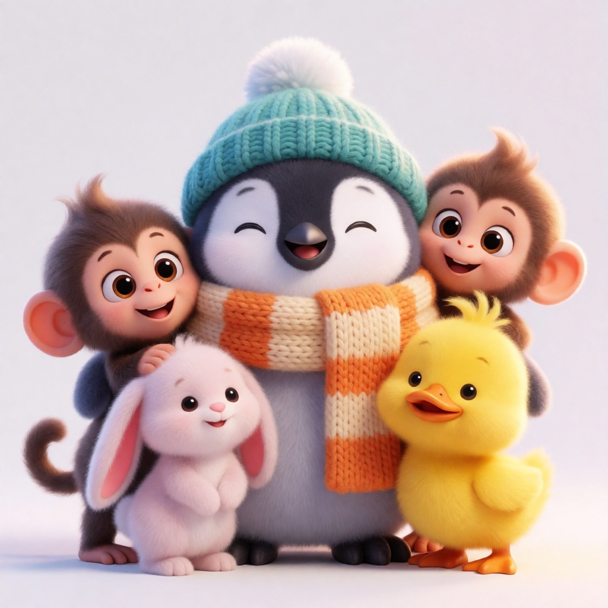

Toonz and Tales presents
Wobble Town Rescue Crew
The Musical Series
A new story-song every Friday at 5 pm Melbourne time. Sing along, clap and wobble!

Coming up next
Meet the crew
- Fizzle, the round blue-and-white penguin who wobbles to the rescue.
- Tammy, the quick little monkey who swings and stretches.
- Biscuit, the fluffy bunny who hops and spots the clues.
- Duckie, the little yellow duckling who zooms ahead.
For grown-ups
Original songs and characters for toddlers and preschoolers, made by Toonz and Tales. This page has no ads, no sign-ups and no tracking. Embedded videos play from YouTube in its privacy-enhanced mode, and thumbnails load from YouTube.